Compare linear and non-linear simulations of an airship.
------------------------------------------------------------------------
-------------------------------------------------------------------------
See also EulNED, QECI, AC, ACInit, @acstate/acstate.m, AirshipLinMod,
AirshipStatespace, AirshipTrim, BuildAirshipModel, C2DZOH, Altitude,
QTForm, DeleteSuffix, Plot2D, Cross, Mag
-------------------------------------------------------------------------
Contents
Default parameters for demo
name = 'ASM3';
xo = 0;
h = 21336;
theta = 0*pi/180;
alpha = 0*pi/180;
V = 15;
tSim = 100;
cmd.actuator = {'dELVL','dELVR'};
cmd.type = {'step','step'};
cmd.value = [1 1]*pi/180;
cmd.tControl = 5;
ensure proper formatting of "cmd" data structure
if( ~iscell(cmd.actuator) )
cmd.actuator = {cmd.actuator};
end
if( ~iscell(cmd.type) )
cmd.type = {cmd.type};
end
time step
dT = 1;
time info
tSim = round(tSim/dT)*dT;
t = 0:dT:tSim;
nSim = length(t);
load airship model data
disp('Building airship model...');
name = DeleteSuffix(name);
mdl = BuildAirshipModel(name,xo);
Building airship model...
compute the linearized model
useAlpha = 0;
g = AirshipLinMod( mdl, h, theta, alpha, V, useAlpha );
get state space matrices
[a,b,c,d] = getabcd( g );
discretize
[a, b] = C2DZOH( a, b, dT );
reorganize matrices (optional)
dimensions
nX = length(a);
nU = size(b,2);
nY = size(c,1);
set up control vector
u = zeros(nU,nSim);
nC = length(cmd.actuator);
acts = {'throttle','mu','dELVL','dELVR','dRUDB','dRUDT'};
kStart = cmd.tControl/dT+1;
for i=1:nC
kAct = StringMatch(cmd.actuator{i},acts);
if( strcmp( cmd.type{i}, 'impulse' ) )
u(kAct,kStart) = cmd.value(i);
elseif( strcmp( cmd.type{i}, 'step' ) )
u(kAct,kStart:end) = cmd.value(i);
end
end
discrete state-space propagation
disp('Running linear simulation...');
x = zeros(nX,1);
yLin = zeros(nY,nSim);
xLin = zeros(nX,nSim);
for k = 1:nSim
yLin(:,k) = c*x + d*u(:,k);
x = a*x + b*u(:,k);
xLin(:,k) = x;
end
[gLat,gLon] = AirshipStatespace(g);
[a,b,c,d] = getabcd(gLat);
latStates = [1 2 4];
a = a(latStates,latStates);
b = b(latStates,:);
c = c(latStates,latStates);
d = d(latStates,:);
[a,b] = C2DZOH( a, b, dT );
x1 = zeros(3,1);
yLin1 = zeros(3,nSim);
xLin1 = zeros(3,nSim);
for k = 1:nSim
rudk = .5*(u(5,k)+u(6,k));
ailk = u(3,k)-u(4,k)+u(5,k)-u(6,k);
yLin1(:,k) = c*x1 + d*[rudk;ailk];
x1 = a*x1 + b*[rudk;ailk];
xLin1(:,k) = x1;
end
[a,b,c,d] = getabcd(gLon);
[a,b] = C2DZOH( a, b, dT );
lonStates = [1 2 3];
a = a(lonStates,lonStates);
b = b(lonStates,:);
c = c(lonStates,lonStates);
d = d(lonStates,:);
x2 = zeros(3,1);
yLin2 = zeros(3,nSim);
xLin2 = zeros(3,nSim);
for k = 1:nSim
elvk = .5*(u(3,k)+u(4,k));
yLin2(:,k) = c*x2 + d*[u(1:2,k);elvk];
x2 = a*x2 + b*[u(1:2,k);elvk];
xLin2(:,k) = x2;
end
Running linear simulation...
Non-Linear Sim
Re = 6378.14*1e3;
initial state
r0 = [Re+h;0;0];
v0 = V*[cos(alpha); 0; sin(alpha)];
q0 = QECI( r0, [0; theta+alpha; 0] );
w0 = zeros(3,1);
xNL = acstate( r0, q0, w0, v0, [], mdl.mass, mdl.inertia, mdl.cG, [], [], [], [], [] );
mdl = ACInit( xNL, mdl );
trim condition
[T,trimMu,trimDELV] = AirshipTrim( mdl, h, theta, alpha, V );
trimThrottle = T/(2*mdl.engine.thrustMax);
r = zeros(3,nSim);
v = zeros(3,nSim);
q = zeros(4,nSim);
w = zeros(3,nSim);
e = zeros(3,nSim);
z = zeros(3,1);
disp('Running non-linear simulation...');
for k = 1:nSim
r(:,k) = get(xNL,'r');
v(:,k) = get(xNL,'v');
q(:,k) = get(xNL,'q');
w(:,k) = get(xNL,'w');
e(:,k) = EulNED( r(:,k), q(:,k), z );
mdl.control.throttle = u(1,k) + trimThrottle;
mdl.control.mu = u(2,k) + trimMu;
mdl.control.dELVL = u(3,k) + trimDELV;
mdl.control.dELVR = u(4,k) + trimDELV;
mdl.control.dRUDB = u(5,k);
mdl.control.dRUDT = u(6,k);
xNL = AC( xNL, t(k), dT, mdl );
end
Running non-linear simulation...
compute the position and velocity of the CG
rCG = r + QTForm(q,mdl.cG);
vCG = v + Cross(w,mdl.cG);
compute the angle of attack and sidelsip
alpha = atan( -vCG(3,:)./vCG(1,:) );
beta = asin( vCG(2,:)./Mag(vCG) );
compute the altitude
h = Altitude(rCG,'si');
output
y = [w; v; alpha; beta; e(1,:); h];
add initial values to yLin
y = y - y(:,ones(1,nSim));
Create the plots
tLab = 'Time [sec]';
uLab = {'throttle';'mu';'dELVL';'dELVR';'dRUDB';'dRUDT'};
p = [y(1,:); yLin(1,:); yLin1(1,:)]*180/pi;
q = [y(2,:); yLin(2,:); yLin2(1,:)]*180/pi;
r = [y(3,:); yLin(3,:); yLin1(2,:)]*180/pi;
vx = [y(4,:); yLin(4,:); yLin2(2,:)];
vy = [y(5,:); yLin(5,:); yLin1(3,:)];
vz = [y(6,:); yLin(6,:); yLin2(3,:)];
alpha = [y(7,:); yLin(7,:); ]*180/pi;
beta = [y(8,:); yLin(8,:); ]*180/pi;
phi = [y(9,:); yLin(9,:); ]*180/pi;
alt = [y(10,:); yLin(10,:) ];
u(2:6,:) = u(2:6,:)*180/pi;
Plot2D( t, u(1:6,:), tLab, uLab, 'Control Inputs' )
Plot2D( t, p, tLab, 'Roll Rate [deg/s]', 'Roll Rate' ), legend('Full Non-Linear','Full Linear','3 State Linear');
Plot2D( t, q, tLab, 'Pitch Rate [deg/s]', 'Pitch Rate' ), legend('Full Non-Linear','Full Linear','3 State Linear');
Plot2D( t, r, tLab, 'Yaw Rate [deg/s]', 'Yaw Rate' ), legend('Full Non-Linear','Full Linear','3 State Linear');
Plot2D( t, vx, tLab, 'x-Velocity [m/s]', 'x-Velocity' ), legend('Full Non-Linear','Full Linear','3 State Linear');
Plot2D( t, vy, tLab, 'y-Velocity [m/s]', 'y-Velocity' ), legend('Full Non-Linear','Full Linear','3 State Linear');
Plot2D( t, vz, tLab, 'z-Velocity [m/s]', 'z-Velocity' ), legend('Full Non-Linear','Full Linear','3 State Linear');
Plot2D( t, alpha, tLab, 'Alpha [deg]', 'Angle of attack' ), legend('Full Non-Linear','Full Linear');
Plot2D( t, beta, tLab, 'Beta [deg]', 'Sideslip' ), legend('Full Non-Linear','Full Linear');
Plot2D( t, phi, tLab, 'Phi [deg]', 'Roll' ), legend('Full Non-Linear','Full Linear');
Plot2D( t, alt, tLab, 'Altitude [m]', 'Altitude' ), legend('Full Non-Linear','Full Linear');
fs = 'fontsize';
rot = 'rotation';
lw = 'linewidth';
ha = 'horizontalalignment';
rt = 'right';
NewFig('Airship Summary'),
subplot(221), plot(t,q,lw,2), grid on, set(gca,fs,14), ylabel('q\newline[deg/s]', rot,0,fs,14,ha,rt);
subplot(222), plot(t,vz,lw,2), grid on, set(gca,fs,14), ylabel('w\newline[m/s]', rot,0,fs,14,ha,rt);
subplot(223), plot(t,alpha,lw,2), grid on, set(gca,fs,14), ylabel('\alpha\newline[deg]',rot,0,fs,14,ha,rt); xlabel('Time [sec]',fs,14);
subplot(224), plot(t,alt,lw,2), grid on, set(gca,fs,14), ylabel('h\newline[m]', rot,0,fs,14,ha,rt); xlabel('Time [sec]',fs,14);
NewFig('Airship Summary'),
subplot(311), plot(t,r,lw,2), grid on, set(gca,fs,14), ylabel('r\newline[deg/s]', rot,0,fs,14,ha,rt);
subplot(312), plot(t,vy,lw,2), grid on, set(gca,fs,14), ylabel('v\newline[m/s]', rot,0,fs,14,ha,rt);
subplot(313), plot(t,beta,lw,2), grid on, set(gca,fs,14), ylabel('\beta\newline[deg]', rot,0,fs,14,ha,rt); xlabel('Time [sec]',fs,14);
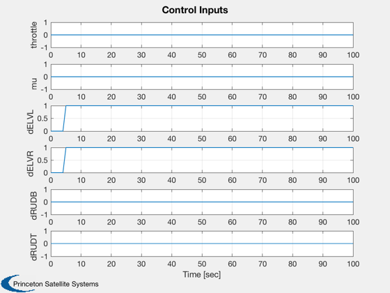 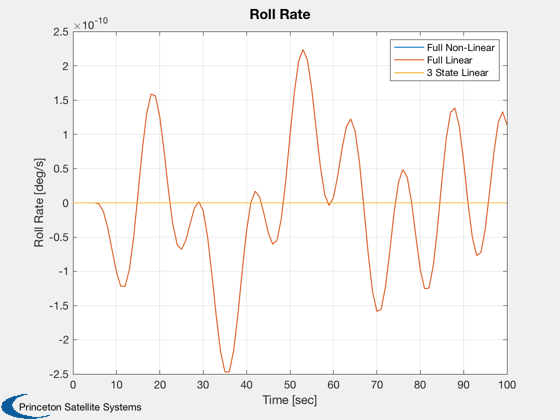 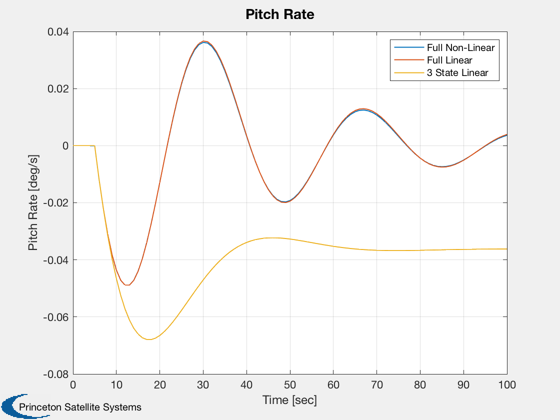 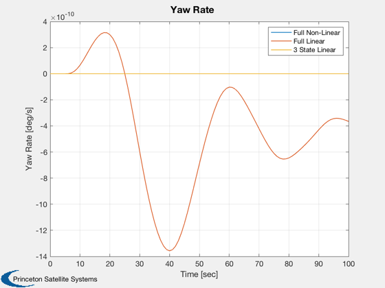 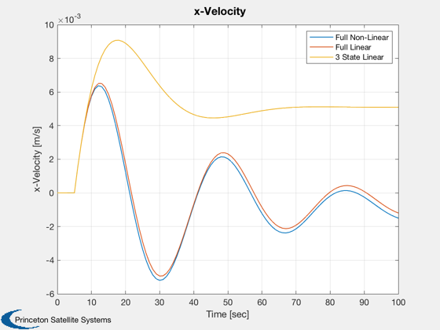 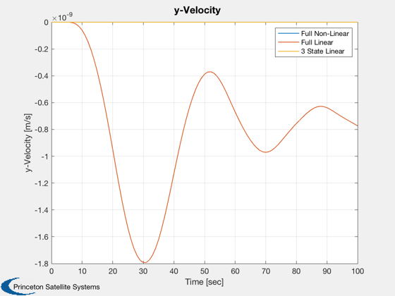 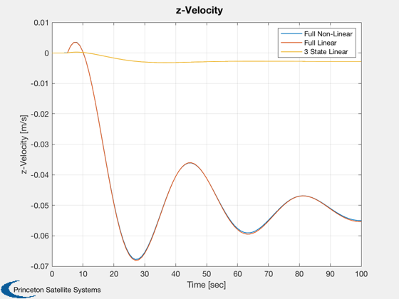 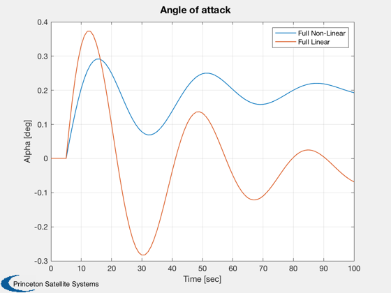 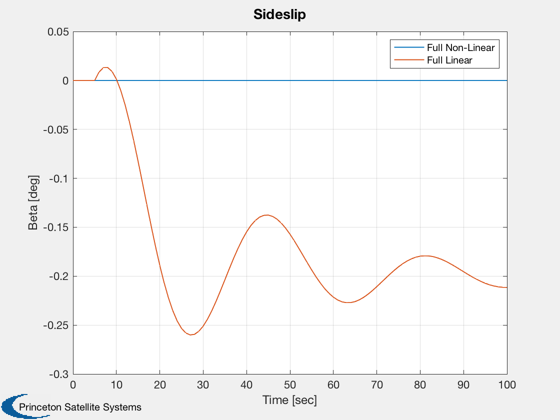 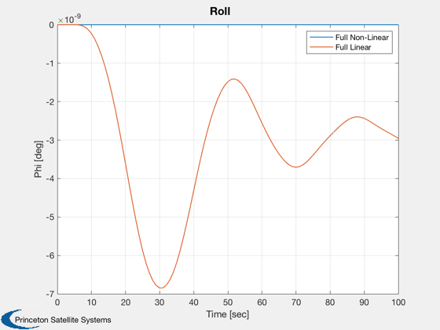 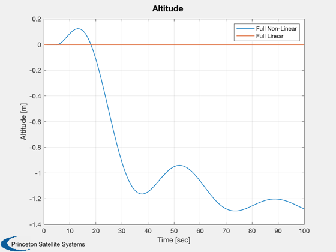 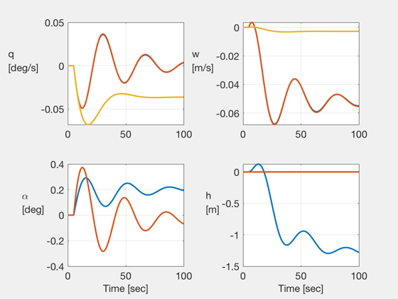 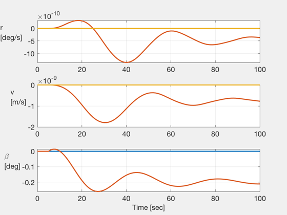